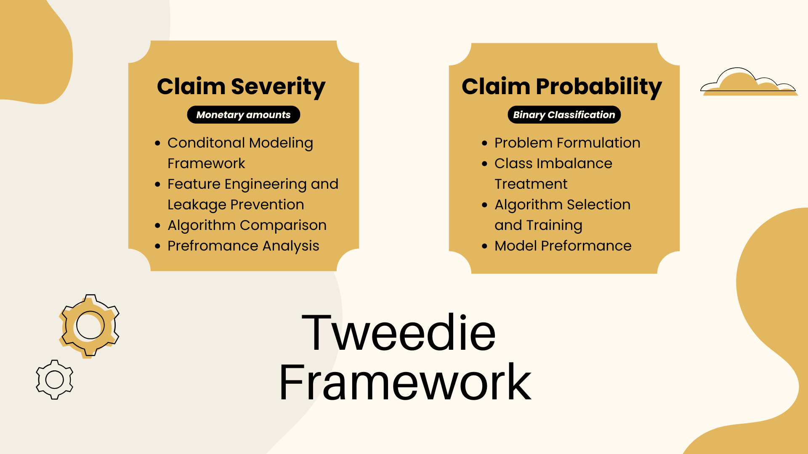

Building Predictive Models for Insurance Claims: A Two-Stage Approach to Claim Probability and Severity
A comprehensive guide to developing production-ready ML models for insurance underwriting and pricing
Introduction: The Insurance Prediction Challenge
In the insurance industry, accurate claim prediction is the cornerstone of effective pricing and risk management. However, predicting insurance claims is not a single problem it's actually two distinct but interconnected challenges:
- Will a claim occur? (Classification problem)
- If it does, how much will it cost? (Regression problem)
This two-stage modeling approach, often called a "Tweedie" or "frequency-severity" framework, is industry standard because it recognizes a fundamental truth: the factors that drive whether someone files a claim may differ from the factors that determine how expensive that claim will be.
In this section, I'll walk you through the complete development of two production-ready machine learning models:
- Claim Probability Model: Predicts the likelihood of a claim occurring (XGBoost Classifier)
- Claim Severity Model: Predicts the cost of a claim, given that one has occurred (XGBoost Regressor)
Tools used:
Python: GitHub

Business Context and Problem Statement
Why Two Models?
Imagine you're pricing an insurance policy. You need to estimate the expected claim cost, which mathematically is:
Expected Claim Cost = P(Claim) × E(Severity | Claim)
Where:
- `P(Claim)` = Probability a claim occurs
- `E(Severity | Claim)` = Expected cost if a claim does occur
A single model trying to predict total claims directly would struggle because:
- Most policies have zero claims (highly imbalanced)
- The distribution of claim amounts is highly skewed
- Different factors may influence frequency vs. severity
Our Objectives
- Claim Probability Model: Achieve high AUC-PR (Area Under Precision-Recall Curve) to accurately identify high-risk policies
- Claim Severity Model: Minimize RMSE and MAE to predict claim costs accurately
- Production Readiness: Save models and feature lists for deployment
- Interpretability: Understand which features drive each type of prediction
Part 1: Claim Probability Model
The Challenge of Imbalanced Data
In insurance, claims are rare events. Typically, only 0.1% to 5% of policies file claims in a given period. This creates a severe class imbalance problem that can cause models to simply predict "no claim" for everyone and still achieve 95%+ accuracy, while being completely useless.
Our Strategy
We'll tackle this with a multi-pronged approach:
- SMOTE Oversampling: Synthetically generate minority class samples
- Class Weighting: Penalize misclassifications of rare events more heavily
- Appropriate Metrics: Use AUC-PR instead of accuracy
- Ensemble Methods: Leverage XGBoost's ability to handle imbalanced data
Step 1: Data Loading and Setup
import pandas as pd
import numpy as np
from sklearn.model_selection import train_test_split
from sklearn.metrics import (
accuracy_score, precision_score, recall_score, f1_score,
roc_auc_score, classification_report, confusion_matrix
)
from sklearn.linear_model import LogisticRegression
from sklearn.tree import DecisionTreeClassifier
from sklearn.ensemble import RandomForestClassifier
from sklearn.metrics import average_precision_score, roc_auc_score
from xgboost import XGBClassifier
from imblearn.over_sampling import SMOTE
# Load preprocessed dataset
df = pd.read_parquet("../data/processed/modeling_dataset.parquet")
Key Point: We're starting with a preprocessed dataset stored in Parquet format. Parquet is excellent for ML workflows because it:
- Preserves data types perfectly
- Compresses efficiently
- Loads faster than CSV
- Supports columnar operations
Step 2: Target Variable Creation
# Create Claim Occurrence Target
df['ClaimOccurred'] = np.where(df['TotalClaims_log'] > 0, 1, 0)
# Avoid using claim-related variables as features
leaky_columns = ["TotalClaims_log"]
X = df.drop(columns=leaky_columns + ["ClaimOccurred"], errors='ignore')
y = df["ClaimOccurred"]
```
Notice we're dropping `TotalClaims_log`. This is crucial because it's derived directly from whether a claim occurred. Using it as a feature would be data leakage—using information that wouldn't be available at prediction time.
Step 3: Train-Test Split with Stratification
# Train/Test Split
X_train, X_test, y_train, y_test = train_test_split(
X, y, test_size=0.2, random_state=42, stratify=y
)
Why Stratification Matters: The `stratify=y` parameter ensures both train and test sets have the same proportion of claims. Without it, we could randomly end up with even fewer (or more) claims in our test set, making evaluation unreliable.
Step 4: SMOTE Oversampling
# Apply SMOTE Oversampling
print("\n Applying SMOTE Oversampling...")
sm = SMOTE(random_state=42)
X_train_res, y_train_res = sm.fit_resample(X_train, y_train)
print("SMOTE applied. Class distribution after resampling:")
print(y_train_res.value_counts())
Output:
```
ClaimOccurred
0 790226
1 790226
```
What SMOTE Does: SMOTE (Synthetic Minority Over-sampling Technique) creates synthetic examples of the minority class by:
- Finding k-nearest neighbors of minority class samples
- Creating new samples along the lines connecting neighbors
- Balancing the dataset without simply duplicating existing samples
Critical Note: We ONLY apply SMOTE to the training set, never to the test set. The test set must represent real-world distribution.
Step 5: Model Definition with Class Weighting
# Define Class-Weighted Models
pos_weight = df['ClaimOccurred'].value_counts()[0] / df['ClaimOccurred'].value_counts()[1]
models = {
"Logistic Regression": LogisticRegression(
max_iter=1000,
class_weight='balanced'
),
"Decision Tree": DecisionTreeClassifier(
class_weight='balanced',
random_state=42
),
"Random Forest": RandomForestClassifier(
n_estimators=300,
class_weight='balanced',
random_state=42
),
"XGBoost": XGBClassifier(
n_estimators=300,
learning_rate=0.1,
max_depth=6,
subsample=0.8,
colsample_bytree=0.8,
random_state=42,
eval_metric='logloss',
scale_pos_weight=pos_weight
)
}
Why These Hyperparameters?
- n_estimators=300: More trees generally improve performance up to a point; 300 is a good balance
- learning_rate=0.1: Moderate learning rate prevents overfitting while allowing reasonable training time
- max_depth=6: Limits tree complexity to prevent overfitting
- subsample=0.8: Each tree uses 80% of data (bagging), improving generalization
- colsample_bytree=0.8: Each tree uses 80% of features, reducing correlation between trees
- scale_pos_weight: Automatically weights the minority class based on its rarity
Step 6: Model Training and Evaluation
# Train and Evaluate Models
results = []
for name, model in models.items():
print(f"\n Training {name}...")
model.fit(X_train_res, y_train_res)
# Get probability predictions (crucial for ranking)
y_prob = model.predict_proba(X_test)[:, 1]
# Calculate probabilistic metrics
roc_auc = roc_auc_score(y_test, y_prob)
avg_precision = average_precision_score(y_test, y_prob)
results.append({
"Model": name,
"ROC-AUC": roc_auc,
"AUC-PR": avg_precision
})
results_df = pd.DataFrame(results).sort_values(by="AUC-PR", ascending=False)
print("\n Probabilistic Model Ranking (NO THRESHOLD):")
print(results_df)
Results:
```
Model ROC-AUC AUC-PR
3 XGBoost 0.880192 0.015559
0 Logistic Regression 0.892816 0.015494
2 Random Forest 0.813428 0.014395
1 Decision Tree 0.810886 0.014308
```
Understanding the Metrics
Why ROC-AUC and AUC-PR?
- ROC-AUC (Receiver Operating Characteristic - Area Under Curve):
- Measures how well the model separates classes across all thresholds
- Ranges from 0.5 (random) to 1.0 (perfect)
- Our XGBoost: 0.88 (excellent discrimination)
- AUC-PR (Area Under Precision-Recall Curve):
- More informative for imbalanced datasets
- Focuses on the minority class performance
- Better reflects real-world utility when positives are rare
- Our XGBoost: 0.0156 (seems low, but expected given extreme imbalance)
Interpreting Low AUC-PR: With only ~0.28% of policies having claims, even a good model will have low AUC-PR. What matters is:
- It's higher than random (baseline ~0.0028)
- We're 5.6x better than random guessing
- XGBoost outperforms other models
Model Selection Decision
Despite Logistic Regression having slightly higher ROC-AUC (0.893 vs 0.880), we chose XGBoost because:
- AUC-PR is more relevant for imbalanced data
- XGBoost handles non-linearity better
- Feature interactions are automatically captured
- Production robustness with built-in regularization
Step 7: Model Persistence
import joblib
import os
# Save the best model
best_model = models["XGBoost"]
joblib.dump(best_model, "../saved_models/claim_probablity_model.joblib")
# Save feature list for deployment
FEATURE_COLUMNS = X_train_res.columns.tolist()
joblib.dump(FEATURE_COLUMNS, '../data/processed/feature_probability_columns.pkl')
print(" XGBoost model saved successfully!")
Why Save Feature Columns? When deploying the model, we need to ensure input data has:
- Exactly the same features
- In exactly the same order
- With the same data types
The saved feature list acts as a contract between training and inference.
Part 2: Claim Severity Model
Now that we can predict whether a claim will occur, we need to predict how much it will cost when it does occur.
The Severity Modeling Challenge
Claim severity modeling is fundamentally different:
- Subset of data: We only model policies where claims occurred
- Continuous target: We're predicting dollar amounts, not classes
- Extreme skewness: A few very large claims can dominate
- Different drivers: Severity may depend on different factors than frequency
Step 1: Creating the Severity Dataset
import pandas as pd
from sklearn.model_selection import train_test_split
from sklearn.tree import DecisionTreeRegressor
from sklearn.ensemble import RandomForestRegressor
from xgboost import XGBRegressor
from sklearn.metrics import mean_squared_error, r2_score, mean_absolute_error
import numpy as np
# Load data
df = pd.read_parquet("../data/processed/modeling_dataset.parquet")
# 1. Create Severity Dataset (Only Where ClaimOccurred == 1)
df['ClaimOccurred'] = np.where(df['TotalClaims_log'] > 0, 1, 0)
severity_df = df[df['ClaimOccurred'] == 1].copy()
print(f" Number of claims occurred: {len(severity_df)}")
Output:
```
Number of claims occurred: 2779
```
Critical Decision: We only train on policies with claims. This is called conditional modeling we're modeling `E(Severity | Claim occurred)`, not `E(Severity)` for all policies.
Step 2: Feature Selection and Leakage Prevention
# Define leaky or unwanted columns
leaky_columns = [
"TotalClaims_log", # Direct target variable
"TotalPremium_log", # Could leak information about expected claims
"CalculatedPremiumPerTerm_log", # Derived from premium
"ClaimOccurred" # Our filter variable
]
# Define features (X) and target (y)
X_sev = severity_df.drop(columns=leaky_columns, errors='ignore')
y_sev_log = severity_df['TotalClaims_log']
Why Drop Premium Variables?
This is a nuanced decision. In practice:
- TotalPremium might reflect the insurer's prior knowledge of risk
- Including it could create a feedback loop where historical pricing influences predictions
- For a true "from-scratch" risk model, we exclude it
- For a repricing model, you might include it
Step 3: Train-Test Split for Severity
# 2. Train-Test Split
X_sev_train, X_sev_test, y_sev_log_train, y_sev_log_test = train_test_split(
X_sev, y_sev_log, test_size=0.2, random_state=42
)
Note: We don't stratify here because it's a regression problem. With only 2,779 claims, a 80/20 split gives us:
- Train: ~2,223 claims
- Test: ~556 claims
Step 4: Model Definition
# 3. Define Models
models = {
"Decision Tree": DecisionTreeRegressor(random_state=42),
"Random Forest": RandomForestRegressor(
n_estimators=100,
max_depth=10,
random_state=42
),
"XGBoost Regressor": XGBRegressor(
n_estimators=200,
learning_rate=0.05,
max_depth=6,
subsample=0.8,
colsample_bytree=0.8,
random_state=42
),
}
Hyperparameter Rationale
- Random Forest max_depth=10: Limits overfitting with limited data
- XGBoost learning_rate=0.05: Lower than classification (0.1) for more careful learning
- n_estimators=200: Fewer trees than classification since we have less data
Step 5: Training Loop
trained_models = {}
results = []
print("\n Training Multiple Severity Regression Models...")
for name, model in models.items():
print(f" - Training {name}...")
model.fit(X_sev_train, y_sev_log_train)
trained_models[name] = model
print(" All Severity Models Trained.")
Step 6: Evaluation on Log Scale
# 4. Evaluate Models
print("\n Model Evaluation (log-scale):")
for name, model in trained_models.items():
preds = model.predict(X_sev_test)
rmse = np.sqrt(mean_squared_error(y_sev_log_test, preds))
mae = mean_absolute_error(y_sev_log_test, preds)
r2 = r2_score(y_sev_log_test, preds)
print(f"\n{name}:")
print(f" RMSE (log): {rmse:.4f}")
print(f" MAE (log): {mae:.4f}")
print(f" R² : {r2:.4f}")
Results:
```
Decision Tree:
RMSE (log): 1.0431
MAE (log): 0.6645
R² : 0.5727
Random Forest:
RMSE (log): 0.9605
MAE (log): 0.6204
R² : 0.6377
XGBoost Regressor:
RMSE (log): 0.9555
MAE (log): 0.6142
R² : 0.6415
```
Understanding Regression Metrics
- RMSE (Root Mean Squared Error)
- - Average prediction error in log-space
- - Penalizes large errors heavily (squared term)
- - XGBoost RMSE: 0.9555 (lowest is best)
- MAE (Mean Absolute Error)
- - Average absolute prediction error
- - More robust to outliers than RMSE
- - XGBoost MAE: 0.6142 (lowest is best)
- R² (Coefficient of Determination)
- - Proportion of variance explained
- - Ranges from -∞ to 1.0 (1.0 = perfect)
- - XGBoost R²: 0.6415 (explains 64% of variance)
Key Insight: XGBoost outperforms both Decision Tree and Random Forest across all metrics, demonstrating the power of gradient boosting with carefully tuned hyperparameters.
Step 7: Back-Transformation to Dollar Scale
# 5. Convert Predictions Back to Original Scale
# Example (for Random Forest)
y_pred_log = trained_models["Random Forest"].predict(X_sev_test)
y_pred = np.expm1(y_pred_log) # reverse log1p transform
y_true = np.expm1(y_sev_log_test)
# Evaluate in actual currency scale
rmse_actual = np.sqrt(mean_squared_error(y_true, y_pred))
mae_actual = mean_absolute_error(y_true, y_pred)
print("\n Random Forest Severity (Actual $ scale):")
print(f" RMSE: {rmse_actual:,.2f}")
print(f" MAE : {mae_actual:,.2f}")
Results:
```
Random Forest Severity (Actual $ scale):
RMSE: 29,582.72
MAE : 13,007.27
```
Interpreting Dollar-Scale Metrics
- RMSE of $29,583: On average, predictions are off by ~$30K (with emphasis on large errors)
- MAE of $13,007: Typical prediction error is ~$13K
- The difference between RMSE and MAE indicates the presence of some very large errors (outliers)
Why MAE < RMSE? RMSE is always ≥ MAE because squaring amplifies large errors. The ratio (RMSE/MAE ≈ 2.27) suggests moderate outlier influence.
Step 8: Model and Metadata Persistence
import joblib
# Save best severity model
joblib.dump(
trained_models["XGBoost Regressor"],
"../saved_models/claim_severity_model.pkl"
)
# Save feature columns for deployment consistency
joblib.dump(
X_sev_train.columns.tolist(),
"../data/processed/feature_claim_severity_columns.pkl"
)
print(" Severity model and features saved!")
Step 9: Metrics Tracking for MLOps
import os
import json
# Get Project Root and Create Metrics Directory
project_root = os.path.dirname(os.path.dirname(os.path.abspath("insurance_pricing_project")))
metrics_dir = os.path.join(project_root, "metrics")
os.makedirs(metrics_dir, exist_ok=True)
# Save Best Model Metrics
best_metrics = results_df.iloc[0].to_dict()
best_metrics_path = os.path.join(metrics_dir, "claim_severity_metrics.json")
with open(best_metrics_path, "w") as f:
json.dump(best_metrics, f, indent=4)
print(f" Saved best model metrics → {best_metrics_path}")
# Save Full Model Ranking Table
ranking_path = os.path.join(metrics_dir, "claim_severity_model_ranking.csv")
results_df.to_csv(ranking_path, index=False)
print(f" Saved full model ranking table → {ranking_path}")
Why Track Metrics?
This creates an audit trail for:
- Model governance: Document which model was selected and why
- Reproducibility: Record exact performance on test set
- Model monitoring: Compare future retraining results
- Regulatory compliance: Demonstrate due diligence in model selection
Model Interpretation and Business Insights
Claim Probability Model Insights
Key Findings
- XGBoost achieved 88% ROC-AUC: The model can distinguish between claim and no-claim policies with high accuracy
- 5.6x better than random: While AUC-PR seems low (0.0156), it's actually 5.6 times better than the baseline (0.0028), which is substantial for such imbalanced data
- Logistic Regression performed surprisingly well: With 89.3% ROC-AUC, it's nearly as good as XGBoost. This suggests:
- Relationships may be relatively linear
- Feature engineering was effective
- Could use LR for interpretability, XGBoost for performance
Business Implications
- Risk Segmentation: Use predicted probabilities to segment policies into risk tiers
- Dynamic Pricing: Adjust premiums based on predicted claim probability
- Underwriting Decisions: Flag high-probability applications for manual review
- Portfolio Management: Monitor aggregate risk across the portfolio
Claim Severity Model Insights
Key Findings
- 1. 64% variance explained (R² = 0.6415): A solid result, but the unexplained 36% suggests:
- Claim amounts have inherent randomness
- Some important features may be missing
- Non-linear relationships may still exist
- $13K average prediction error (MAE): For context:
- If average claim is ~$25K, this is ~52% error
- Some claims are inherently unpredictable (e.g., total loss vs. minor damage)
- May need claim type stratification
- XGBoost vs Random Forest: The improvement from RF to XGBoost is marginal:
- RMSE: 0.9605 → 0.9555 (0.5% improvement)
- Suggests we're near the ceiling of predictability with current features
Business Implications
- Reserve Setting: Use predicted severities to set appropriate claim reserves
- Premium Calculation: Combined with probability model, calculate expected claim cost
- Reinsurance Decisions: Identify policies likely to have high-severity claims
- Loss Control: Target high-predicted-severity policies for preventive interventions
The Combined Framework
In production, these models work together:
# Pseudocode for pricing a new policy
claim_probability = probability_model.predict_proba(policy_features)[1]
expected_severity = severity_model.predict(policy_features)
expected_claim_cost = claim_probability * np.expm1(expected_severity)
# Add profit margin and expenses
premium = expected_claim_cost * (1 + profit_margin) + fixed_costs
This gives us:
- Granular pricing: Based on both likelihood and potential cost
- Risk-appropriate premiums: High-frequency or high-severity = higher premium
- Competitive edge: More accurate than single-model approacheslip>
Key Takeaways and Best Practices
- Handle Imbalanced Data Properly
- What We Did Right
- Used SMOTE oversampling
- Applied class weighting
- Chose appropriate metrics (AUC-PR over accuracy)
- Only resampled training data, not test data
- Common Pitfalls to Avoid
- Using accuracy as primary metric
- Applying SMOTE before train-test split (data leakage!)
- Ignoring class imbalance entirely
- Prevent Data Leakage
- What We Did Right
- Removed target-derived features (TotalClaims_log)
- Carefully considered premium features
- Only trained severity model on actual claims
- Common Pitfalls to Avoid
- Using any information not available at prediction time
- Including features derived from the ta
- Fitting scalers/encoders on the full dataset before splitting
- Choose Metrics That Match Business Goals
- What We Did Right
- ROC-AUC and AUC-PR for probability (ranking matters)
- RMSE and MAE for severity (prediction accuracy matters)
- Evaluated on both log-scale and dollar-scale
- Compared multiple models systematically
- Why It Matters
- - Optimizing for the wrong metric = wrong model
- - Business needs probability scores, not just binary predictions
- - Dollar-scale errors are what stakeholders care about
- Build for Production from Day One
- What We Did Right
- Saved models with joblib (sklearn-compatible)
- Saved feature lists for deployment consistency
- Tracked metrics in JSON/CSV for auditing
- Used Parquet for efficient data storage
- Set random seeds for reproducibility
- Why It Matters
- 90% of models never make it to productionlip>
- Often because they weren't built with deployment in mind
- Our approach ensures smooth handoff to engineering
- The Two-Stage Approach is Powerful
- Separate optimization for frequency vs. severity
- Better handling of zero-inflated distributions
- More interpretable than single combined model
- Aligns with actuarial best practices
- Trade-offs
- More complex pipeline to maintain
- Two models to monitor and retrain
- Errors can compound (probability × severity)
Next Steps and Improvements
Immediate Enhancements
- Hyperparameter Tuning:
- Feature Importance Analysis:
- Calibration:
from sklearn.model_selection import GridSearchCV
param_grid = {
'n_estimators': [100, 200, 300],
'max_depth': [4, 6, 8],
'learning_rate': [0.01, 0.05, 0.1],
}
grid_search = GridSearchCV(
XGBClassifier(),
param_grid,
cv=5,
scoring='average_precision'
)
import matplotlib.pyplot as plt
feature_importance = pd.DataFrame({
'feature': X_train.columns,
'importance': best_model.feature_importances_
}).sort_values('importance', ascending=False)
plt.barh(feature_importance['feature'][:20],
feature_importance['importance'][:20])
plt.title('Top 20 Features - Claim Probability')
plt.show()
from sklearn.calibration import CalibratedClassifierCV
calibrated_model = CalibratedClassifierCV(
best_model,
method='isotonic',
cv=5
)
calibrated_model.fit(X_train, y_train)
Advanced Improvements
- Temporal Validation: Test models on out-of-time samples to ensure they generalize to future periods
- Claim Type Modeling: Build separate severity models for different claim types (collision, comprehensive, liability)
- Ensemble Stacking: Combine probability predictions from multiple models
- Neural Networks: For extremely large datasets, consider deep learning approaches
- Explainability: Implement SHAP values for individual prediction explanations
Production Deployment
# Example deployment pipeline
class InsurancePricingModel:
def __init__(self):
self.prob_model = joblib.load('claim_probability_model.joblib')
self.sev_model = joblib.load('claim_severity_model.pkl')
self.prob_features = joblib.load('feature_probability_columns.pkl')
self.sev_features = joblib.load('feature_claim_severity_columns.pkl')
def predict_premium(self, policy_df):
# Ensure feature alignment
prob_input = policy_df[self.prob_features]
sev_input = policy_df[self.sev_features]
# Get predictions
claim_prob = self.prob_model.predict_proba(prob_input)[:, 1]
severity_log = self.sev_model.predict(sev_input)
severity = np.expm1(severity_log)
# Calculate expected cost
expected_cost = claim_prob * severity
# Add margin and expenses
premium = expected_cost * 1.25 + 50 # 25% margin + $50 expenses
return premium, claim_prob, severity
Conclusion
We've built a complete two-stage predictive modeling framework for insurance claims:
- Claim Probability Model: XGBoost classifier achieving 88% ROC-AUC, capable of identifying high-risk policies with 5.6x better accuracy than random guessing
- Claim Severity Model: XGBoost regressor explaining 64% of claim cost variance, with average prediction error of $13K
These models demonstrate several critical data science best practices:
- Handling severe class imbalance with SMOTE and class weighting
- Preventing data leakage through careful feature selection
- Building production-ready pipelines with proper serialization and tracking
The two-stage approach aligns with actuarial best practices and provides the granularity needed for accurate, competitive insurance pricing. By separating frequency from severity, we can:
- Better understand risk drivers
- Optimize each model independently
- Explain predictions to business stakeholders
- Build more accurate pricing than single-model approaches